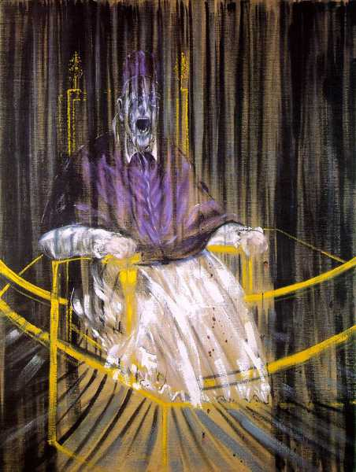

museums and digital
housekeeping
homework review
what is your museum about?
why did you choose these objects?
how do you harness the specificity of augmented reality?
limbo museum
- clock (no time)
- bridge with the chord
- set of instructions
- door
- loading screen
replicating an "actual" museum
architecture space / poem space
feels like being in a room
digital concepts review
procedure
participation
space
encyclopaedia
janet murray
hamlet on the holodeck
explore > scale / movement
clicking
how it operates/
procedurality
a balance between order and disorder
sleep no more
what is a museum?
what does it do?
to select / collect / preserve
to teach
to learn (do research)
to contextualize
to communicate
to curate
why do you go:
- sometimes to learn
- the experience
- content/discourse
museum missions
PRC
preserve - research - communicate
what?
how do they communicate?
museum's content
what qualifies to come into a museum?
how does a thing become an object?
displaying it / people viewing it
someone that it wasn't intended for viewing it
not using it anymore
objects are signifiers

the person or topic loses practical significance to gain a new kind of meaning. it is a signifier for new messages and ideas..
a museum object represents
- truth
- heritage
- culture
le musée imaginaire
The 'musée imaginaire' is our imaginary collection of all the works, both inside and outside art museums, that we today regard as important works of art.
an exhibition, and a collection, are all about relationships between objects.
the role of the museum
from scientific research
to nation building
and community education

space/place
difference between space and place?
what is the designing intent of a museum space? what do you learn from studying people's behaviours?
communities/publics
there is a shift between turning the museum from a passive to an active experience.
communities are self-organized, publics are organized through a discourse.
culture/society
difference between culture and society?
different cultures in one society
society
cultures
cultures
cultures
Hoa Hakananai'a
museums and digital technology
so how does technology seem to change the museum?
in terms of place(s), of community(ies), of experience(s), of communication(s)?
accessibility issues
geolocation
delivery of information
information that doesn't care about
doesn't break the "immersion"
customization
the virtual museum
it's a museum of (photographic/digital) copies of everything entering into dialogue
what is the value of a copy? is it less? it it more?
break
10 minutes
arrays
arrays are a type of data, which consist in a list of other data.
if you want to have a lot of the same kinds of things (e.g. lots of GameObjects), you might want to use an array.
sound
for sound, you need at least one audio listener, and one audio source.
sound can be diegetic (3D), or non-diegetic (2D)
animations
animations can control the behaviour of a data point (e.g. the Y rotation) over time.
you need both an animation asset, and an animator component (which keeps track of all the animations)
asset store
the asset store is a resource to find unity-ready objects, textures, materials, etc.
exercise
display several game objects on the scene.
when the user clicks one game object, make all the other ones get smaller.
when the user clicks again, make all objects go back to their original size.
ARImageAnchor
how to recognize an image in AR
add a texture to the AR Reference Image, and that AR Reference Image to an AR Reference Set
homework
due in two weeks
has to be in groups
no longer just about the content, but also about the medium.